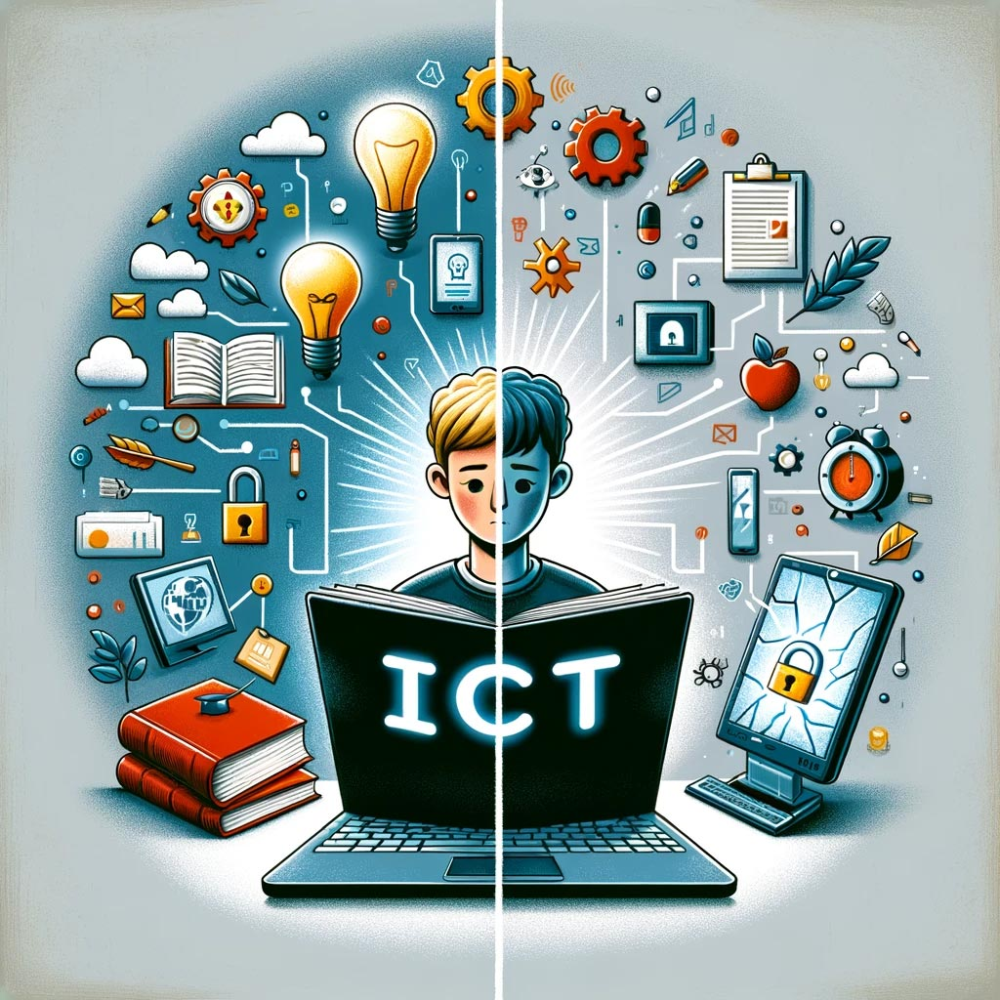

Hey There, My Name is Guilherme...
Welcome to my ICT Portfolio! Here, you'll find why I chose ICT, how it's impacting the world, and my journey through this exciting field.
Why ICT?
I've always had a strong passion for technology, which started at a young age. My curiosity about how computers and software worked naturally led me to explore various aspects of technology. In high school, I made a pivotal decision to pursue a programming course, which not only deepened my interest but also provided me with a solid foundation in coding, algorithms, and problem-solving techniques.
After high school, I had the opportunity to gain hands-on experience in the tech industry, working on real-world projects. This experience gave me a practical understanding of how technology is applied to solve complex problems in various industries. The rapid advancements in areas like artificial intelligence, cloud computing, and cybersecurity made me eager to deepen my knowledge and stay at the forefront of innovation.
How ICT Influences the World?
Information and Communication Technology (ICT) has become a cornerstone of the modern world, influencing nearly every aspect of our daily lives. From communication to business, healthcare, and education, ICT has revolutionized how we interact and work.
- Business: ICT improves efficiency with tools like cloud computing and automation.
- Education: E-learning platforms have made education more accessible globally.
- Healthcare: ICT enables telemedicine, improving care quality and accessibility.
- Society: ICT fosters social movements and activism, creating global connectivity.

ICT will continue to drive innovation, growth, and transformation in various fields, shaping the future of our world.
Interesting Documents
Here are some insightful documents and articles that explore various aspects of ICT and technology. These resources can help you dive deeper into this exciting field.